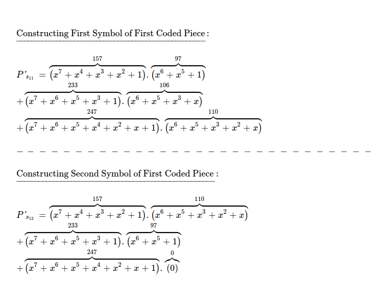

Last week I spent some time going through encoding, decoding process in Random Linear Network Coding,
this week I was exploring recoding part of RLNC, which is seemingly more interesting
because other block coding/ rateless coding techniques don't possess it.
One of the good parts of RLNC is it can provide Forward Error Correction
not only in point-to-point manner, but also in a fully distributed setup. The Random part
of RLNC denotes coding vector creation is more flexible, while still being equally ( if not more ) performant.
Each peer can randomly draw coefficients without any need of coordination & code original pieces/
recode already coded pieces ( received from some other peer ) into newly coded pieces, which can be distributed to next hops
who may again recode if needed, while coded pieces still staying decodable as long as
enough number of linearly independent pieces are found. RLNC allows flexible generation size
choice i.e. how many pieces to code together is easily configurable. RLNC is able to
effectively solve p2p file sharing system's rarest piece selection problem to a great
extent, because each piece is quite equally important to peers interested in collecting all pieces
for constructing whole file.
Source peer can spread N-many original pieces along with few coded pieces throughout network
& may leave. Other peers can create more coded pieces using any combination of
coded/ uncoded pieces available to it. After sometime when some new peer is interested in
constructing whole file, it'll simply collect minimum N-many useful pieces from any peers.
As long as collected pieces together encompass all original pieces, data is fully constructable.
RLNC provides with some level of inherent security because if atleast N-many pieces
are not available, data can't be decoded. Though I don't think it's something to be relied on
due to presence of flexible generation based RLNC techniques, where it's possible to decode from
stream of data i.e. not waiting for all pieces to arrive & then decode.
I'll dig deep into coding, decoding & recoding for full RLNC scheme, where I take a byte slice
; generate coded pieces, which are recoded & newly coded pieces are made available; some useful pieces are collected
from set of all available pieces for attempting decoding into original byte slice.
I also explain, how to choose useful pieces ?
I start by taking a byte array i.e. [97, 110, 106, 97, 110], which I plan to code. For coding using RLNC, I need
to fix one finite field from where I'll be drawing elements at random i.e. coding coefficients.
As each element of byte array can be represented using 8-bits ( max possible byte 255 ),
I choose Galois Field 2**8, which also has 256 elements. GF(2**8) is an extension of prime field GF(2). All arithmetic operations
in this finite field i.e. addition & multiplication result into element of same field.
I intensionally skipped subtraction & division, because they're addition & multiplication in disguise, respectively.
I choose x^8 + x^4 + x^3 + x^2 + 1
as irreducible polynomial, which behaves like a prime number i.e. has only 1 & self as factors.
$ python3
>>> import galois
>>> gf256 = galois.GF(2 ** 8) # extension field
>>> irr = gf256.irreducible_poly
>>> irr
Poly(x^8 + x^4 + x^3 + x^2 + 1, GF(2)) # default irreducible polynomial for field
>>> galois.poly_factors(irr)
([Poly(x^8 + x^4 + x^3 + x^2 + 1, GF(2))], [1]) # only two factors i.e. 1 & self
One more operation which I need to perform on finite field elements is inverse. Multiplicative inverse can be easily calculated using lookup table ( available for small field sizes ).
>>> gf256(1) / gf256(129)
GF(84, order=2^8)
Now if I check result of multiplication of 129 & 84 in GF(2**8), it must be 1.
>>> gf256(84) * gf256(129)
GF(1, order=2^8)
Now I've to divide byte slice into set of pieces. Each piece will have few symbols, where each symbol is a Galois Field element & I've already decided to work with GF(2**8). I pack 2 field elements together and create a piece. So, I've 3 pieces, with each of first two pieces having 2 symbols and last one having 1 symbol.

But for performing RLNC, I need to have all pieces consisting of same number of symbols,
which is why I pad 0 at end of last piece.
Pieces are ready to be coded now.

As I've 3 pieces to be coded together, I randomly draw 3 elements from GF(2**8) & use as first coding vector.
>>> coding_vector = [157, 233, 247]
Coding is simply performing this matrix multiplication.

One thing to note, pieces are added together by performing symbol by symbol addition. Resulting coded piece has two symbols then.
Following this thoery, I try to construct first coded piece. I've to represent coding vector & original pieces as polyomials. First symbol of first piece i.e. 97 can be written as x^6 + x^5 + 1. Similarly I write all of the field elements as polynomials.
All arithmetic operations need to be performed on chosen finite field & resulting elements also ends up in same field. I'll construct both symbols of first coded piece.
>>> gf256(157) * gf256(97) + gf256(233) * gf256(106) + gf256(247) * gf256(110)
GF(64, order=2^8)
>>> gf256(157) * gf256(110) + gf256(233) * gf256(97) + gf256(247) * gf256(0)
GF(118, order=2^8)
First coded piece along with randomly chosen coding vector, used for construction.

This way, I again randomly draw 3 elements from GF(2**8), which I use for constructing second coded piece. This time I get [160, 28, 233] & while trying to construct both symbols of second coded piece, I follow aforementioned formula of symbol by symbol addition.
>>> gf256(160) * gf256(97) + gf256(28) * gf256(106) + gf256(233) * gf256(110)
GF(185, order=2^8)
>>> gf256(160) * gf256(110) + gf256(28) * gf256(97) + gf256(233) * gf256(0)
GF(176, order=2^8)
Second coding vector & respective coded piece is here. One thing to note, these two need to be kept together & when transfered over wire to some other peer this association must not be lost otherwise piece won't be helpful while attempting to recode/ decode.

Similarly I construct two more coded pieces.